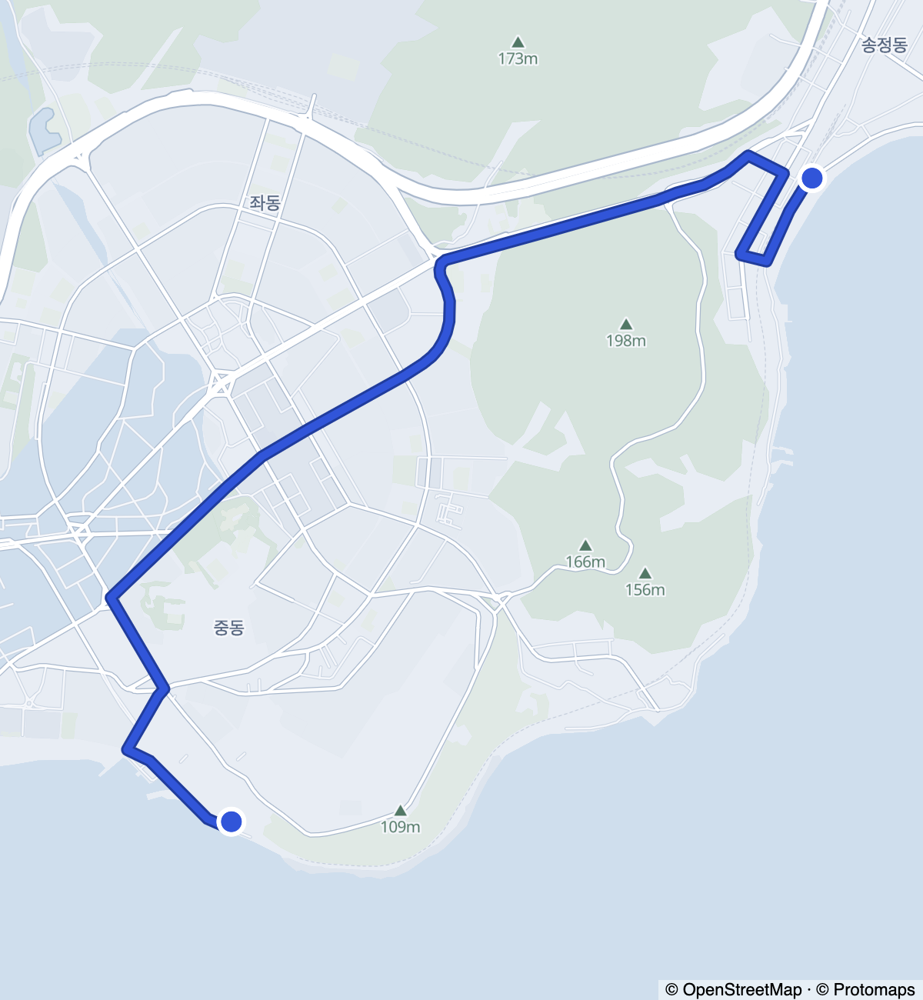
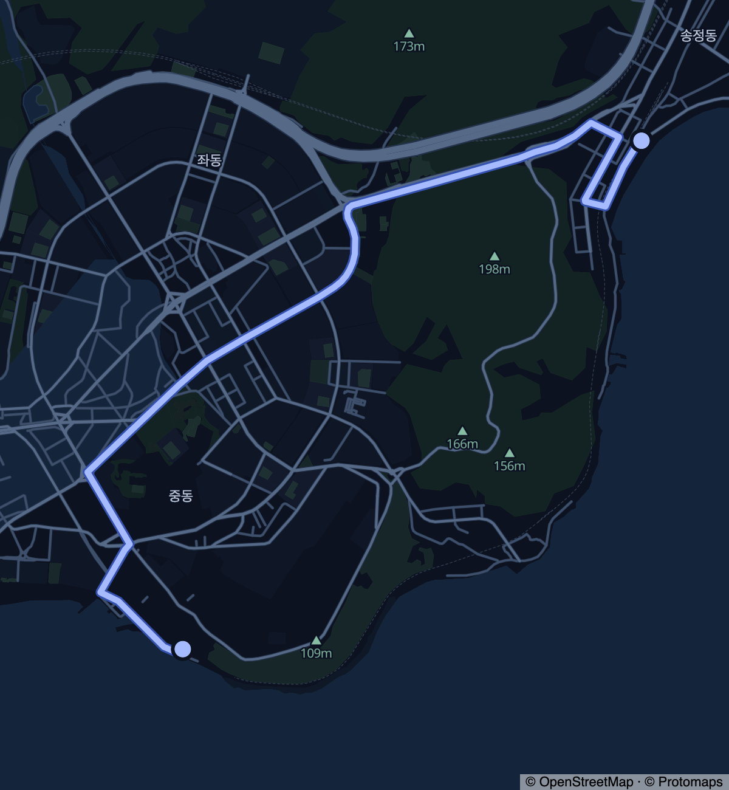

내가 좋아하는 길 찾기
목적지를 검색하고 프리셋을 골라보세요. 경치·굽이·한적함·편안함·위험구간 회피의 비중을 조절할 수 있어요.
이륜차 라이더를 위한 지도
경치를 조금 더, 복잡한 길은 조금 덜.
Osol에서 나에게 맞는
경로를 고르고,
달린 길을 기록하고, 크루와 함께하세요.
Android · iPhone 베타 운영 중


5.4 km 약 7분
2026.11.16 탐색 예시 · 예상 시간은 도로 상황에 따라 달라져요.
© OpenStreetMap
· © Protomaps
한 번의 라이딩을, 처음부터 끝까지
출발 전의 선택부터 돌아온 뒤의 기록까지.
필요한 순간에 맞는
도구를 준비했어요.
목적지를 검색하고 프리셋을 골라보세요. 경치·굽이·한적함·편안함·위험구간 회피의 비중을 조절할 수 있어요.
회전 안내와 남은 거리, 위치 상태를 확인하세요. 경로 안내와 주행 기록은 필요에 맞게 시작할 수 있어요.
달린 경로를 저장하고 다시 살펴보세요. 기록을 남기는 것과 다른 사람에게 공유하는 것은 따로 선택해요.
이륜차 통행 제한과 도로 정보를 반영해 경로를 찾습니다. 안내는 참고 정보이므로 실제 표지와 도로 상황을 우선 확인하고, 화면 조작은 정차 후 해주세요.
나의 기록, 우리의 다음 코스
좋았던 코스는 나누고, 시작과 끝의 위치는 보호하세요. 공개 범위를 확인한 뒤 공유할 수 있어요.
원본 경로는 나에게.공유 범위와 원본 접근 권한을 구분해요.
시작과 끝은 보호해서.공유하기 전에 보호 구간을 확인하세요.
초대 코드로 크루를 만나고, 경로를 공유하세요. 같이 달리기에서는 위치와 음성 연결을 켜고 끌 수 있어요.
앱 미리보기
초대 코드를 나누고, 채팅으로 약속하고, 같이 달리기를 시작하세요. 크루의 다음 라이드를 한곳에서 준비할 수 있어요.
크루 사용 방법 알아보기예시 데이터로 촬영한 개발 베타 화면입니다. 설치 버전과 다를 수 있어요.

다음 라이딩의 시작
현재 베타로 운영하고 있어요.
기기에 맞는 설치 방법과 참여
조건을 확인해 주세요.